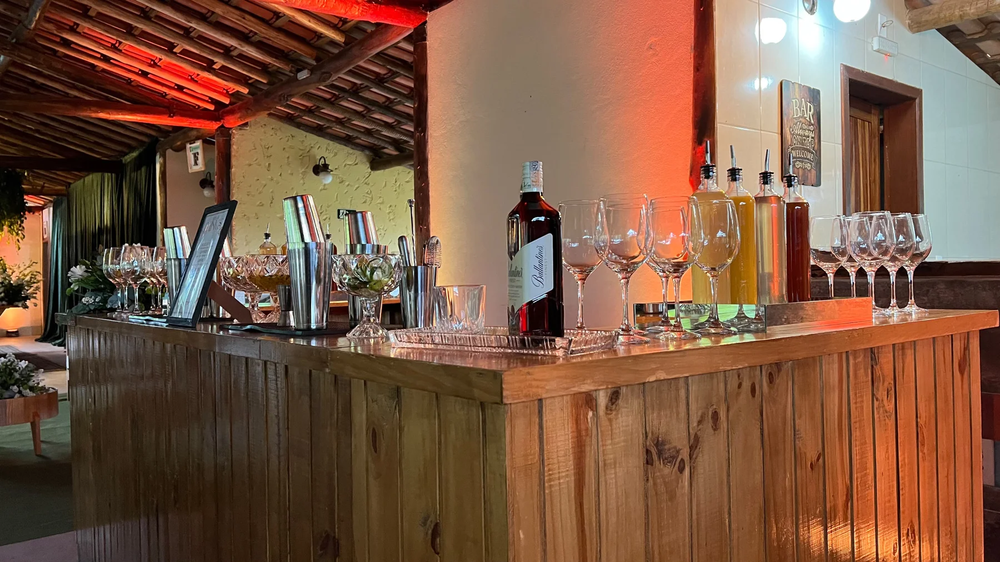
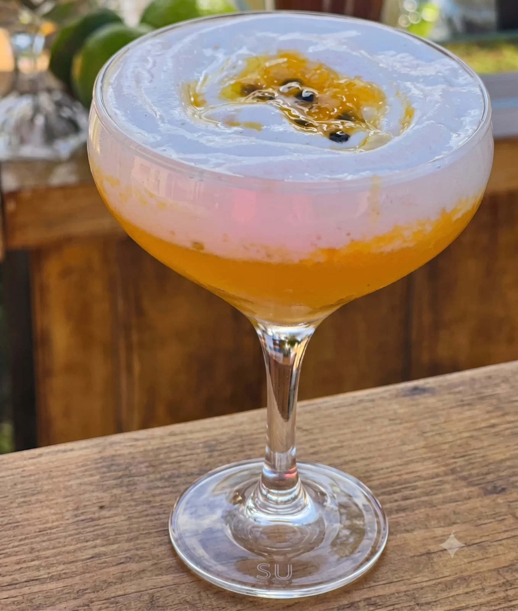
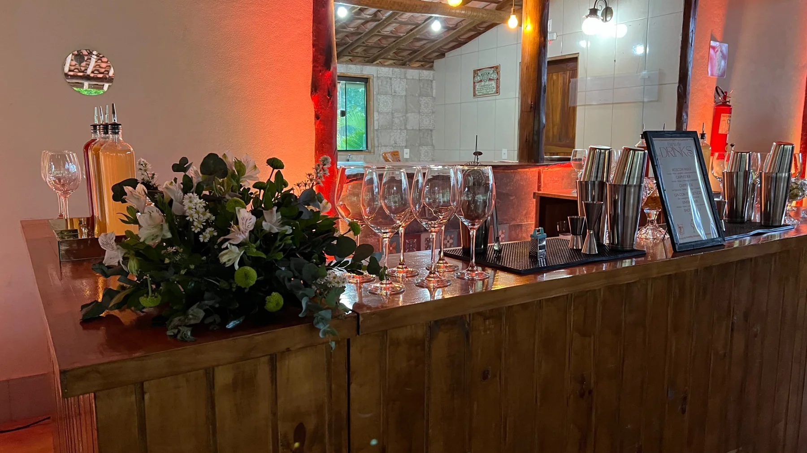
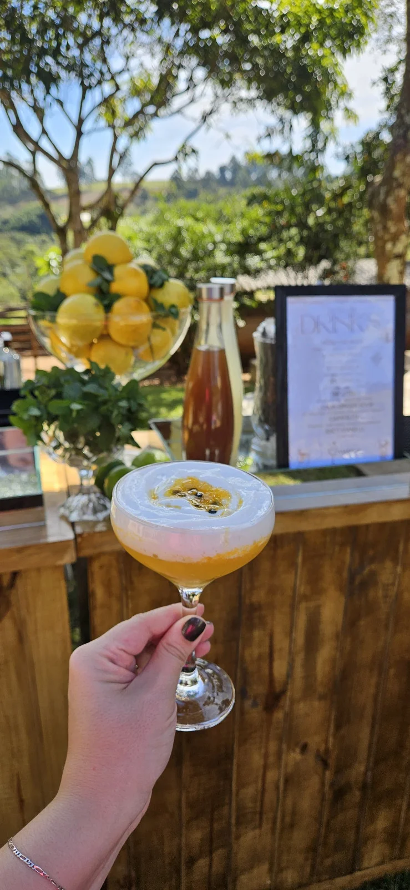

FRUTADO · CÍTRICO
Passion Ginger Sour
Gin, limão siciliano, maracujá, laranja e espuma de gengibre.

VIANELLI DRINKS · COQUETELARIA
Sabores que surpreendem. Detalhes que encantam.
Descubra o seu próximo drink favorito.
ENTRE RIOS DE MINAS E REGIÃO
Explore nossa carta
UM TOQUE DE SABOR. UMA NOVA MEMÓRIA.A ESSÊNCIA VIANELLI
Há algo especial em reunir pessoas, compartilhar histórias e levantar uma taça. É nesse encontro que a Vianelli Drinks faz parte da celebração.
Dos clássicos da coquetelaria às combinações de frutas, especiarias e espumas, nossa carta convida você a experimentar e encontrar o sabor do seu momento.
Encontre o seu favoritoO CENÁRIO DO SEU BRINDE
Um pouco da Vianelli Drinks em imagens.
O bar, os sabores e a atmosfera de celebrar.


VIANELLI DRINKS
Entre Rios de Minas e região.
Converse com a gente e leve a Vianelli para o seu momento.